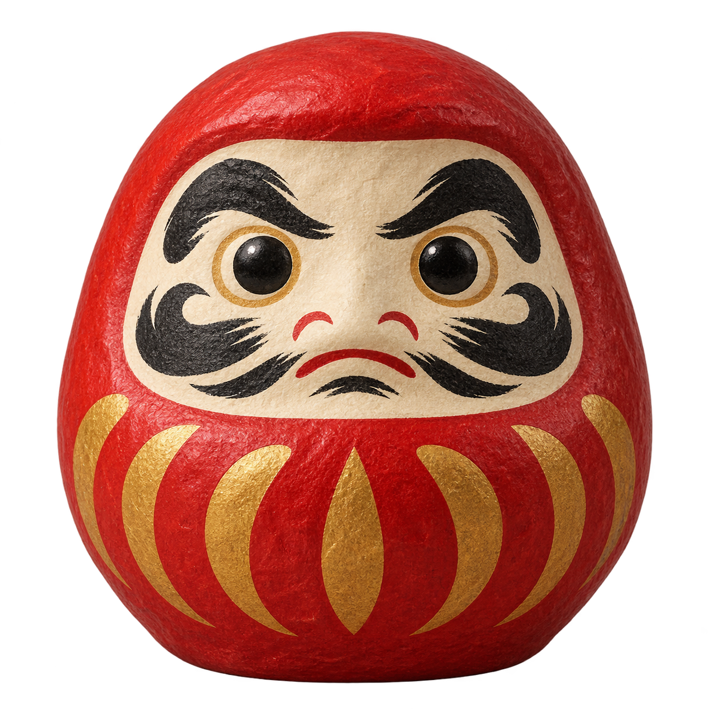

Two bonsai, two cats, one daruma. Original transparent colour artwork shown at shelf scale. The native renderer keeps these colours in night mode. This is an artwork preview, not a KOReader emulator.
